CPAN PhD Network
Don't Miss
the Good Stuff
Some of the most ingenious engineering in experimental HEP has nothing to do with the detector — it's about deciding, in microseconds, whether what just happened is worth keeping.

- L1 must decide in fixed latency — CMS: 3.8 μs from collision to decision
- Data is held in pipeline buffers in detector front-end electronics during this time
- Uses coarse, fast information: calorimeter clusters (e, γ, jets, MET) + muon track stubs
- Implemented in custom FPGAs and ASICs — no commercial off-the-shelf hardware
- Output: list of "trigger objects" — e.g. e⁻ candidate, ET > 30 GeV at (η, φ)
- L1 accept rate: ~100 kHz (ATLAS/CMS)
From collision to L1 accept signal
"L1 is like a bouncer at a club who has 4 microseconds to look at your shoes and decide if you get in. No time to check your ID."
Example menu conditions (CMS-style)
- Implemented in custom FPGAs — logic evaluated in nanoseconds
- All ~500 seeds evaluated simultaneously in parallel hardware
- HLT runs on a CPU farm: CMS ~30,000 cores, ATLAS similar scale
- At 100 kHz input → ~O(300 ms) per event on average
- Runs a partial version of offline reconstruction: tracking, clustering, jet finding, b-tagging
- Key trick: seeded reconstruction — only reconstruct in the RoI flagged by L1
- At each step, partial results can reject early → save CPU time
- Output rate: ~1–2 kHz → permanent storage
- Both designed to discover the unexpected → broad menu philosophy
- ATLAS: L1Calo + L1Muon + L1Topo (topological correlations) → ~100 kHz → HLT → ~1.5 kHz
- CMS: Time-multiplexed Layer-1 + Global Trigger → ~100 kHz → HLT → ~2 kHz
- Key challenge: MET triggers — need full calorimeter sum, very sensitive to noise
Key Higgs triggers
The trigger menu is a delicate balance: broad enough to catch the unexpected, tight enough to stay within rate budgets.
- ALICE studies the Quark-Gluon Plasma (QGP) in Pb-Pb collisions — very different physics
- Pb-Pb: event size ~100× larger than pp, but collision rate much lower (~10 kHz in Pb runs)
- Run 3 upgrade: continuous readout at 50 kHz minimum bias, no hardware trigger for most detectors
- Online-Offline (O²) framework: compression, online calibration and reconstruction
- For Pb-Pb: essentially record everything, compress online, select later
A completely different trigger philosophy — driven entirely by the physics of heavy-ion collisions.
For some physics (e.g. dijet resonances at low mass), rates are too high to store full events. Solution: store only trigger-level objects.
Physics targets
- Searches at lower mass thresholds with huge statistics
- Dark sector: dark photons, light dijet resonances
Trade-off
No offline reconstruction, limited systematic control
Thank you
Questions, comments, and arguments about trigger menus all welcome.